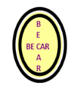

Mon Parcours Professionnel

Assistant administratif – BECAR
Mai 2025 – Septembre 2025 · Paris
- Gestion du standard téléphonique : filtrage, transmission des appels et prise de messages
- Collecte, nettoyage et organisation des données de projets agronomiques
- Création de présentations PowerPoint pour réunions et événements professionnels
- Préparation et organisation des salles de réunion

Hôte d’accueil aéroportuaire – OTESSA
Février 2025 – Mars 2025 · Aéroport de Paris-Orly
- Accueil et orientation des voyageurs
- Gestion du flux pour assurer une circulation fluide
- Vérification des documents de voyage
- Accompagnement des passagers aux étapes de contrôle des bagages

Vice-président – Protech
Janvier 2023 – Mai 2024 · Alger, Algérie
- Organisation et coordination d’événements, d’ateliers et de conférences en Data Science
- Gestion quotidienne de l’association : budget, opérations, coordination des bénévoles
- Développement de partenariats avec des experts pour enrichir les activités